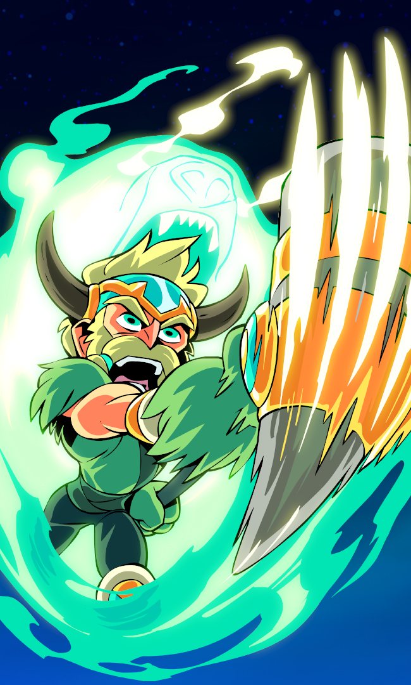

The Purple background is good for eye strain contrasted wih a nice blue menu. The blue menu also glows lightblue when you hover it to clearly indicate what you want to click.
I have chosen to use the picture in the middle as it is from my favourite video game.
I have chosen to use a menu bar at the bottom of the page. My reasoning being that I want it to be easily accessed which is why I have chosen it to be sticky as well.
 I have done all of this for a higher grade.